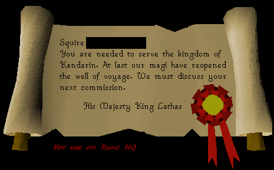
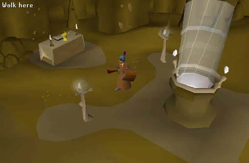
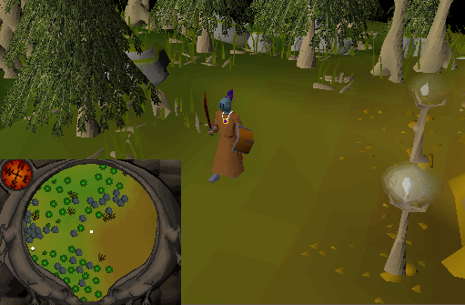
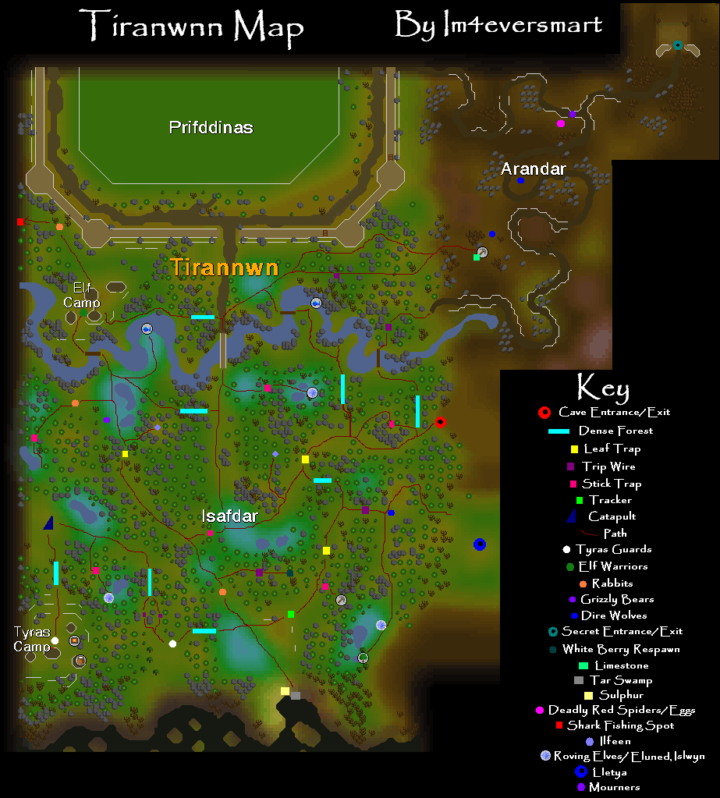
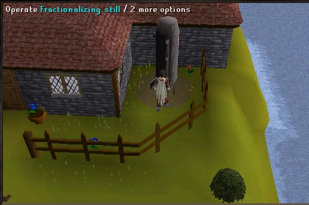
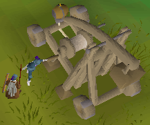
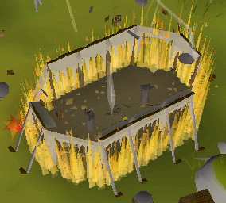
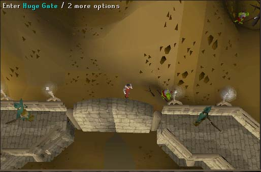
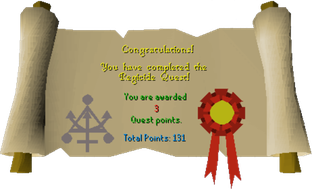
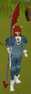

Regicide
Description:Continuing the Plague City series, the Regicide Quest takes you beyond the 'Well of Voyage' to a new realm. King Lathas will employ you once again, this time for the grim task of deposing his brother. Once you have travelled to the realm you will find yourself surrounded by new and strange plants, animals and even a new race. Once there, you will see that everything is not as serene as it first appears.Difficulty: Hard
Length: Long
Required Quests:
- Underground Pass
Items & Skills Needed:
- 56 Agility (Higher level is an advantage)
Recommended:
- Ability to defeat a level 110 guard
Reward: 3 Quest Points, 13k Agility Experience, 15000 coins, and the ability to buy and wield the Dragon Halberd.
Instructions:
After you have completed the Underground Pass, a squire will randomly appear in front of you. He will give you a message, read it. It tells you to go to King Lathas.

King Lathas says the wizards have completed making the portal and that you are to go through and talk with the Elven King.
Go through the underground pass (see underground pass quest) but this time you can skip the destroying of the crystal part, the killing of the unicorn and the killing of the paladins. *note* do not talk to the paladins, they believe that you are Iban's follower and will attack you if you engage them in conversation.
Go to the path to Iban's chamber (no you don't need the doll) and go inside the door. You can talk to the people there or just go straight down the magical well. You can recharge your prayer points at the altar, if not continue out of the cave.

Welcome to the land of the Elves! As soon as you arrive you will be confronted by a guy named Idris, but some elves named Morvran and Essyllt will kill him and tell you to go to Lord Iowerth's camp in the Northwest corner of the forest.

Here are some dangerous traps you will encounter:

- Trip wires: These are extremely hard to see. If you walk through them you will get shot by poisoned arrows. The arrows deal 5 damage apiece and poison you at a rate of 2 hp per time. To successfully bypass the trap find the wire and click "Step over". It should be in between two rocks close together, which are really the crossbows that shoot you. This requires agility and is possible to be failed.
- Leaf traps: These tricky things appear as trees from the top and leaves/bushes from the side. If you walk over one then you will get hit 15 and fall into a nasty pit. To bypass this trap, just find it and click "Jump leaves" and you will try and get past them. If you have trouble, try clicking "Jump leaves" on the side that you are closest to. This too, requires agility.
- Stick Traps: They will hit you for 8 damage if you fail to cross them, right click and say pass to manuever over them.
Head southwest past the leaves (jump over them). *NOTE* The trick to jumping the leaves is to click "Jump Leaves" on the side that is facing you, otherwise you will fail more often*. Keep continuing Southwest and there is a Stick trap, just keep clicking "pass sticks" till you pass it safely. Take the north path all the way to Iorwerth's camp (jump over the other leaves) and cross the log. He will tell you to seek out his tracker.
Go south past the leaf trap again and keep going south. Talk to the tracker, he doesn't trust you. Go back to Iorwerth and get a pendant and then go back to the tracker and show the pendant.
The tracker tells you to search the west side of camp for a trace of Tyras's men. Go straight west from the tracker and you should see 4 black footprints on the grass. Look at them then return to the tracker. You are not allowed to go into the nearby "Dense forest" until you find the footprints and return to the tracker.
BATTLE TIME! Once you go west 3 times into the dense forest you will be attacked by a lvl 110 Tyras Guard. Once the guard is slain keep going on, the others will not attack you. On the north side of the clearing there is a small path, beware of the two almost invisible black line traps on either path. Jump over the line trap or else you will be poisoned and hurt 10 damage.
Go into Tyras's camp by going through the dense forest. Inside the camp talk to General Hining. You can also use the shop to buy food, or any (but the dragon) of the NEW kind of weapons, the halberds.
Bronze is 104 gp, Iron is 364 gp, Steel is 1300 gp, Black is 2496, Mithril is 3380, Addy is 8320, Rune is 83200, and Dragon is 325000. All prices depend on stock of the store.
*Note* you can only buy the Dragon Halberd after you have finished the quest, before then you can only see it but it is NEVER in stock.
Go back to the tracker then to Lord Iorwerth. He gives you a book about explosives called The Big Book of Bangs. There are several items that you need to make the explosive. Pickup the pot in the camp now if you didn't bring one.
Sulfur - South of the tracker, use with Pestle and mortar to get a powder.
Quicklime - Mine limestone in the pits East of the South gate of the Elf City Prifddinas. Prifddinas is North of the stick trap that gained you access to the tracker and camp. Just go north of it instead of going past it and you should come to the Elf City after crossing a huge stone bridge. (There is an east gate to the city but it is not used in the quest and can't be entered.)
On the way east to the mining area there should be a Leaf trap that you have to jump over and some Level 88 Dire Wolves that you have to run past. If you go past the Dire Wolves and cannot find the limestone quarry, you have gone too far north. In this case, head back to the Dire Wolves and then head south east and you will find the limestone quarry.
Use the Limestone on the small furnace in the Tyras Camp (you may take 8 damage!) to make Quicklime. While you have a Pot in your inventory use the Quicklime with Pestle and mortar to make a powder. (Pot can be found in the Elf camp, it spawns in one of the tents.)*
Naphtha - get a Barrel from the Tyras camp then use it on the swamp south of the tracker to get coal tar, then teleport to Falador and put the barrel, the Big Book of Bangs, and some Coal in your inventory (10-20 pieces depending on how well you can distill). Go to the Rimmington Chemist that was in the Biohazard quest. Distill the coal tar by putting the Coal tar in the distiller then adding Coal (see instructions below). You want your heat in the red/green areas and pressure in the green area. Once you have filled the green 'distilled' bar then exit it then you will have naphtha.
How to Distill: Use the tar-filled barrel with the distiller. Put Coal in the distiller and watch the heat go up. When the heat gets into the green zone turn the tar valve (right one) on. If the pressure goes past the green zone, vent the pressure by turning the left valve on. Dont let the pressure go too low so you close the valve when it goes below green. Keep repeating this untill you have distilled all of the coal-tar. It takes a while to get used to it. Each valve can be manipulated as follow: Click on left side of the valve to turn the valve down. Click on right side of the valve to turn the valve up.

Use the Pot of quicklime with the naphtha barrel, then use the Ground sulphur with the barrel. Fetch materials for the Underground Pass (bow and arrows, spade, rope) and 4 Balls of wool (Also bring along an hatchet and tinderbox for step 14) and go to the Elf camp. Use the Balls of wool on the loom to create a Cloth. Use the Cloth with the barrel.
Buy a tinder box (Tyras's camp shop) if you don't already have one, then cook some Rabbit meat then go to the catapult launcher and give the man the meat. Use the barrel on the catapult and boom goes Tyras.


Return to the Lord and tell him the news. He will give you a message. Now you can teleport to Ardougne and then give the message to the King of the Paladins. You will have a surprise visitor on the way there......(I will not reveal the ending, to keep it a surprise.)

Congratulations, Quest Complete!

Dragon Halberd costs anywhere from 325k to 350k depending on the store's stocks.

This quest guide was written by Im4eversmart, Gypped, trekkie. Thanks to DRAVAN, Lancer, homedog12584,JoshB and ant1989 for corrections.
This quest guide was entered into the RuneHQ.com database on Thu, Sep 23, 2004, at 12:18:37 PM by Supercoolyo and was last updated on Sun, Sep 18, 2005, at 10:40:17 AM by Im4eversmart.